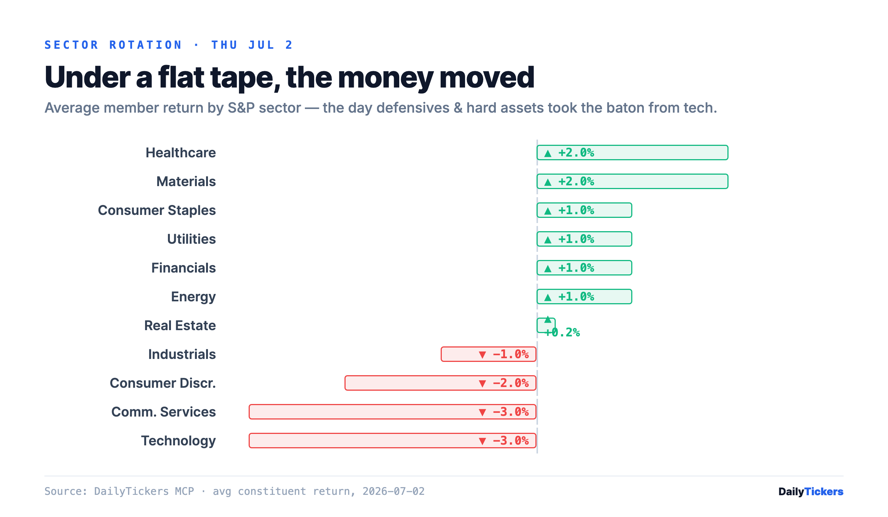
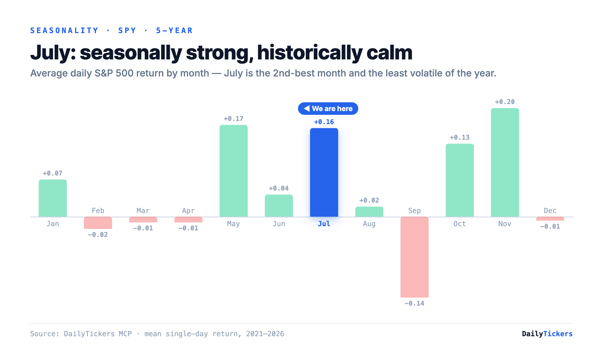

A near-flat S&P 500 (−0.4%) and a green Dow (+0.8%) hid the sharpest factor rotation of the summer: the Nasdaq fell −1.2% and semiconductors were dumped (SMH −4.5%) while healthcare printed a fresh 52-week high, materials and gold caught a bid, and Europe ripped (DAX +2.2%). The dollar cracked below 101 and credit stayed firm — this is a rotation, not a risk-off break. With Friday July 3 a full NYSE holiday behind us, the week ahead is a clean full session into July, historically the calmest, second-strongest month of the year. Here is how to position — with real levels.
The headline index barely moved, but under the surface the market swapped leadership. Healthcare and materials led; technology and communication services were sold. That is a textbook value-and-hard-assets rotation, not broad de-risking.

Our scanner’s own trades tell the same story, verified against real OHLC bars. June 30 was a regime-flip day and a whipsaw: four fresh breakouts entered that morning were stopped out intraday — TS (−0.88%), SPH (−1.01%), FSUN (−2.94%) and HON (−4.57%) — every one carrying a stop tighter than roughly 3%. The single trendline breakout that survived, NIQ, did so because its stop was wide (~12%): it rode through the noise to hit its target for +10.34%. The lesson the market keeps teaching: in a rotation, give trades room or don’t take them.
Real technicals as of the Jul 2 close. Leadership is concentrated in healthcare, precious metals and international — the exact opposite of the mega-cap tech trade that led into June.
| Vehicle | Last | Day | RSI | vs EMA20 | Read |
|---|---|---|---|---|---|
| XLV Healthcare | $163.74 | +2.6% | 72 | above | New 52-wk high — leader, but hot |
| EFA Int’l (ex-US) | $104.37 | +1.3% | 54 | above | Cleanest trend, $1 from 52-wk high |
| GDX Gold miners | $78.43 | +4.5% | 46 | just below | Reclaiming; weak-USD tailwind |
| SLV Silver | $55.02 | +2.7% | 38 | below | Most beaten-down; early turn |
| SMH Semiconductors | $592.29 | −4.5% | 47 | broke below | Bearish MACD cross — avoid |
There is no tier-1 US macro release scheduled in our feed for July 6–10, which hands the tape back to price action — and price action has a seasonal tailwind. Over the last five years, July is the S&P’s second-best month and its least volatile. Strong-but-calm is the ideal backdrop for a rotation to keep working rather than snap.

ETF-level ideas that ride the rotation instead of fighting it. Levels are from the Jul 2 close; size to your own risk and confirm on Monday’s open.
Above all three rising EMAs with RSI 54 (room to run) and a weak dollar as a direct tailwind. The lowest-drama way to be long the rotation.
Jumped +4.5% on Thursday as gold pushed +1.1% to $4,128 and DXY broke sub-101. A daily close back above the EMA20 turns the bounce into a trend attempt with an attractive reward-to-risk.
The clearest leadership on the board, but stretched. Let it exhale; the first pullback into the rising EMA20 is the higher-quality entry.
A −4.5% group day is a reflex-bounce trap, not a bottom. Patience beats catching the falling knife.
Our regime model reads risk-on (defensiveness 5/100, 62% confidence). Its 5-day transition odds: risk-on 50%, neutral 26%, early risk-off 16%, crisis 7%.
Dollar keeps sliding, gold/miners/international extend, semis stabilize without dragging the tape. Rotation broadens; buy dips in the leaders.
Choppy digestion: leaders consolidate, semis chop sideways near the EMA50. Stay selective, keep stops wide, respect the July calm.
A 10-year yield spike (through 4.49%) or a dollar bounce breaks the rotation and pulls everything lower together. Trim, raise cash.
All figures sourced from the DailyTickers MCP market data service, timestamped 2026-07-02. Prices are the Thursday July 2 US close (Friday July 3 was a full NYSE holiday). Sector rotation = average constituent return by GICS sector. Seasonality = mean single-day return by calendar month over five years of daily bars. Scanner trade outcomes verified against real OHLC bars. Technicals (RSI, EMA, MACD, ATR) computed on daily bars. Past patterns are not predictive.
This report is for information and education only and is not investment advice. Markets carry risk; do your own research and manage position size.